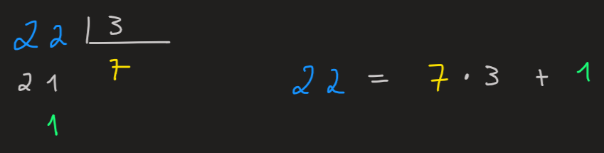
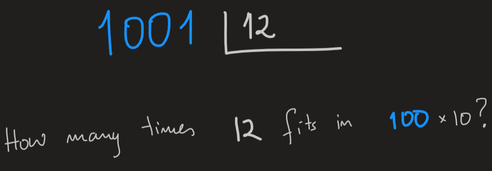
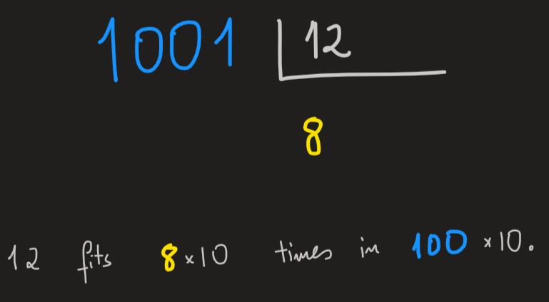
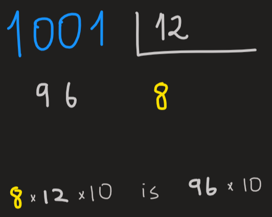
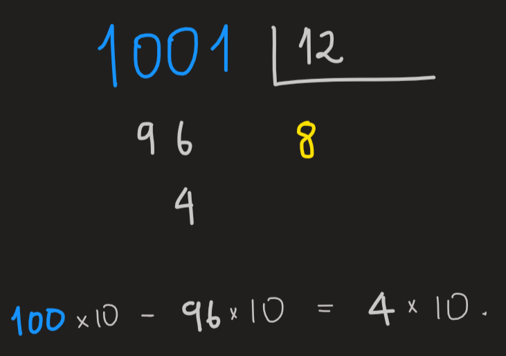
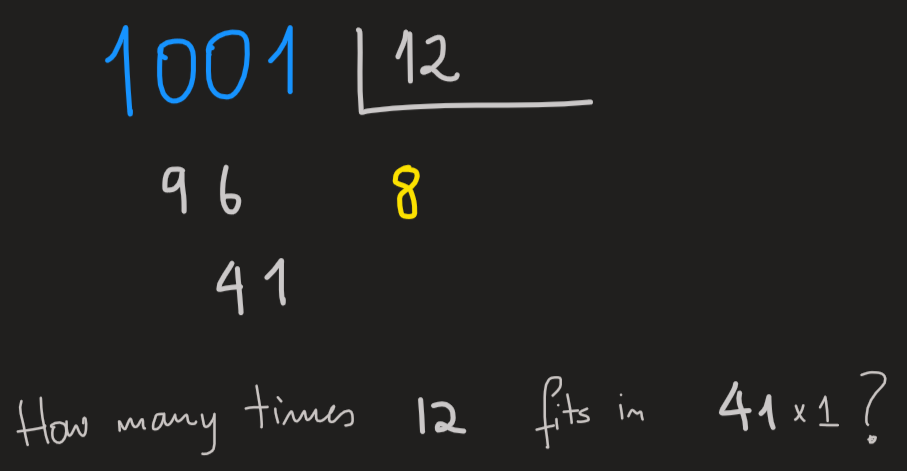
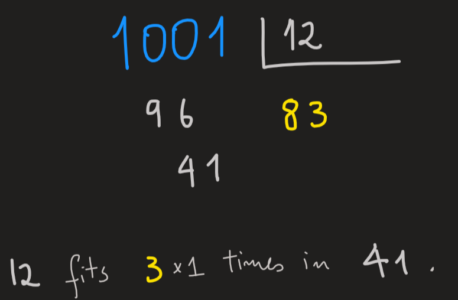
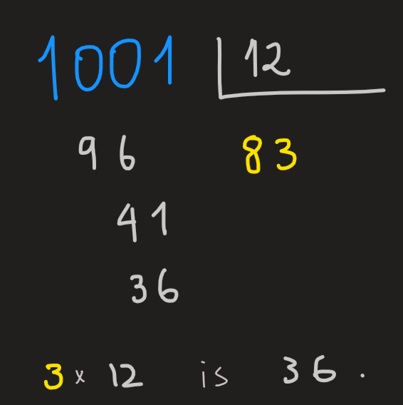
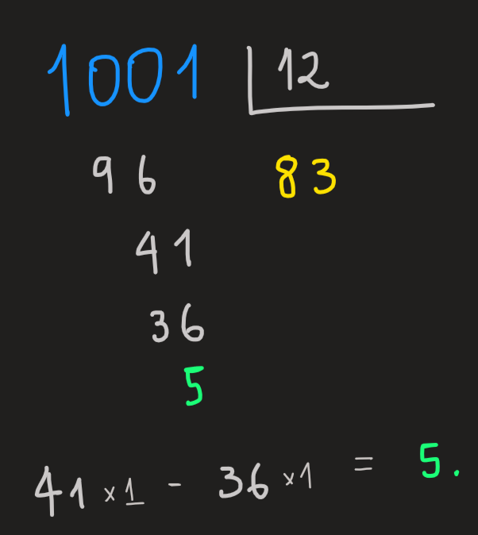

pol_division
Divisão de inteiros
Recordemos com exemplos o algoritmo de divisão que aprendemos no ensino básico.
Exemplo 1: \(22/3\)

- O múltiplo de \(3\) mais perto de \(22\) é \(7\).
- Como \(7\times 3 = 21\), a subtracção \(22-21\) dá-nos \(1\).
- Dado que \(1\) não é divisível por \(3\), este é considerado o resto da divisão.
- Concluímos que: \(22 = 7\times 3 +1\).
Uma forma alternativa de calcular \(22/3\)
O quociente de inteiros \(p/d\) é o número que nos diz quantas vezes \(d\) cabe em \(p\), esta é a ideia chave!
Por sua vez este número diz-nos quem é maior, \(p\) ou \(d\)?
Quando \(p/d<1\) então \(d\) é maior.
Quando \(p/d=1\) são o mesmo número.
Quando o quociente é maior do que \(1\), significa que \(p\) é maior.
Foque-mo-nos no último caso.
Considera \(22\) e \(3\), repara que, \(3\), cabe \(7\) vezes em \(22\) pois \(3\times 7=21\). Concluímos então que \(22=7\cdot 3+1\), o resto \(1\) é a pequena correcção que falta a \(3\times 7\) para chegar a \(22\). A formula
\[ 22=7\cdot 3 +1 \]
relacciona os números \(22\) e \(3\). Observa, no lado esquerdo um único número \(22\) e no lado direito \(7\times 3 +1\) as peças que o compõem.
Usando em geral esta decomposição tem as seguintes características:
Sejam \(p\) e \(d\) dois interiros. Então existe um inteiro \(r\) tal que \(0\leq r<d\) e um inteiro \(q\geq 0\) tal que:
\[ p=qd+r \]
A ideia chave para realizar o calculo \(22/3\) é ver quantas vezes \(3\) cabe dentro de \(22\), por outras palavras, a ideia chave é encontrar o número \(q\) que garante a correcção \(r\) mais pequena (neste caso inferior a \(3\)), ou seja:
\[ 22=q\cdot 3+r \qquad 0\leq r<3 \]
Como é que encontramos este número \(q\)? Resposta: Adivinhamos a resposta. Eis alguns exemplos:
E se \(q=6\)?
Substituindo na equação obtemos \(22=6\cdot 3+r\) o que é equivalente a\(r=22-18=4\). Da do que o resto não está entre \(0\) e \(3\), temos de parti-lo em partes mais pequenas:
\[ 4 = q'\cdot 3 + r' \qquad 0\leq r' < 3 \]
Adivinhando que a resposta é \(q'=1\), obtemos \(r'=1\).
Em conclusão:
\[ 22 = 6\times 3 + 1\times 3 + +1 \]
Ou seja:
\[ 22 = 7\times 3 +1 \]
E se \(q=7\)?
Substituindo obtemos
\[ 22 = 7\times 3 + r \]
o que é equivalente a
\[ r = 22-21 = 1 \]
Concluímos que
\[ 22 = 7\times 3 +1 \]
E se \(q=8\) ?
\[ 22 = 8\times 3 + r \iff r=22-24 =-2 \]
Então
\[ 22 = 8\times 3 -2 \]
Como o resto é negativo e precisamos dele positivo, vamos corrigir esta expressão adicionado \(0=3-3\):
\[ 22 = 8\times 3 -2 +3-3 = (8-1)\times 3 +(3-2) = 7\times 3 +1 \]
Example 2: \(1001/12\)
Let us consider now a more sophisticated division \(1001/12\), how do we argue as in elementary school?
We would first ask:

Implicit in this question is the observation that \(1001 = 100\times 10 +1\).
The answer is obviously \(8\):

Look the position of the \(8\) is at the \(10\)’s place (under the \(1\) in \(12\)).
Multiplying now \(8\times 12 = 96\) we place it under the \(10\)’s place of \(1001\):

Now we remove from \(1001\) the value \(96 \times 10\) since \(96\) sits under the \(10\)’s place, the result is a \(4\) under the \(10\)’s place:

Removing \(96\times 10\) from \(1000\) yields the \(4 \times 10\), but removing \(96\times 10\) from \(1001\) gives \(4\times 10 +1\), thus we drop the \(1\) in \(1001\) and ask:

The answer is \(3\), we place it under the \(1\)’s place (under the \(2\) in \(12\)):

Multiplying \(3\times 12\) we obtain \(36\), we write it under the \(1\)’s place of \(41\):

Removing from the current remainder \(41\) this \(36\) gives:

Combining all these removals from \(1001\) we conclude:
What we have been computing in elementary school with this dividion algorithm is the solution \(q\) and \(r\) of the equation:
\[ 1001 = q \times 12 + r \qquad 0\leq r<12 \]
There are many paths and we follow then in stages.
The extreme of simplicity is to immediately guess the answer as \(q=83\) and \(r=5\), you do this if you are a genius, a path of a single step.
Depending on the quality of our guesses we increase the number of steps.
Guess 1:
Observing that \(1001=600+401\) and \(5\times 12 =60\) we guess that actual solution \(q\) is close to \(10\times 5\):
\[ 600+401 = \overbrace{10 \times 5}^{q} \times 12 +r \]
with the remainder \(r=401\). Since it is not between \(0\) and \(12\) we can do better. Lets break \(401\) by guessing what is \(q'\) and \(r'\) such that:
\[ 401 = q'\times 12 + r' \qquad 0\leq r'<12 \]
We think \(q'=3\times10\) is a good solution since \(q'\times 12 = 360\), as a result the remainder is \(r'=401-360=41\)
Not ideal, we want it at most \(12\). Therefore we again break into pieces:
\[ 41 = q''\times 12 + r'' \qquad 0\leq r''<12 \]
With the guess \(q''=3\) and the current remainder is just \(r''=41-36=5\).
Note, finally!! We have a remainder smaller than \(12\).
Collecting out calculations we have:
\[ 1001 = \overbrace{(10 \times 5 + 3\times 10 + 3)}^{q=83}\times 12 + 5 \]
When guessing \(q\) it is useful to break \(p\) (in the example above \(p=1001\)) into a large and a smaller part.
\[ p=[\text{large part}]+[\text{small part}] \]
And then guess the best you can the \(q\) that cancels the large part.
There are many ways to break \(p\), experience will tell you what is ideal or not.
General approach to computing divisions
A general strategy to solve the problem:
\[ 1001=q\cdot 12 +r\qquad 0\leq q<12 \tag{1}\]
starts by splitting the parameters of the equation into powers of \(10\)
\[ \begin{split}&1001=1\cdot 10^3+0\cdot 10^2+0\cdot 10^1+1\cdot 10^0\\&12=1\cdot 10^1+2\cdot 10^0\\\end{split} \]
and the unknowns \(q\) and \(r\) as well:
\[ \begin{split}&q=a\cdot 10^2+b\cdot 10^2+c\cdot 10^0\\&r=\alpha \cdot 10^0\end{split} \]
for some real numbers \(a\), \(b\), \(c\) and \(\alpha\).
Substituting we find
\[ 1\cdot 10^3+0\cdot 10^2+0\cdot 10^1+1\cdot 10^0=(a\cdot 10^2+b\cdot 10^1+c\cdot 10^0)\cdot (1\cdot 10^1+2\cdot 10^0) +\alpha \cdot 10^0 \]
Rearranging, we factor the same powers on the right side, which gives us:
\[ 1\cdot 10^3+0\cdot 10^2+0\cdot 10^1+1\cdot 10^0=a\cdot 10^3+(2a+b)\cdot 10^2+(2b+c)\cdot 10^1+(2c+\alpha)\cdot 10^0 \tag{2}\]
The goal of determining what is \(q\) and \(r\) that satisfy the conditions Equation 1 becomes the goal of determining \(a\), \(b\), \(c\) and \(\alpha\) that satisfy Equation 2.
Both sides of Equation 2 are equal provides the coefficients of the same powers of \(10\) are equal, that yields the following system of equations to solve:
\[ \begin{cases}10^3:\,\,\,1=a\\10^2:\,\,\,0=2a+b\\10^1:\,\,\,0=2b+c\\10^0:\,\,\,1=2c+\alpha\end{cases} \]
with the additional constraint \(0\leq \alpha <12\).
The solution of this system of equations is \(a=1\), \(b=-2\), \(c=4\) and \(\alpha=-7\) . Thus:
\[ \begin{split}&q=1\cdot 10^2-2\cdot 10^1+4\cdot 10^0=84\\&r=-7\cdot 10^0=-7\end{split} \]
Hence, \(1001=84\cdot 12-7\), observe the remainder is negative, therefore we need to modify this result to make it positive and below \(12\). Adding \(0=12-12\) to the right hand side we find:
\[ \begin{split}&1001=84\cdot 12-7+12-12\\\implies&1001=83\cdot 12+5\end{split} \]
The final result is \(1001=83\cdot 12+5\) as we computed through other methods.
Division of polynomials
The division of polynomials follow from the theorem:
Let \(f\) and \(g\) be non-zero polynomials. Then there exist polynomials \(q\), \(r\) such that \(\deg r < \deg g\) such that:
\[ f(x)=q(x)g(x)+r(x) \]
The strategy to make this division is similar to the long division, let us see an example.
Consider \(f(x):= x^3+1\) and \(g(x) := x+2\). The theorem tell us that (a) the polynomial \(q(x)\) must have a degree equal to \(2\); (b) the degree of \(r(x)\) is \(0\). From this we know the general from of these polynomials to be:
\[ \begin{split}&q(x) := ax^2+bx+c\\&r(x) := \alpha \end{split} \]
Substituting we find:
\[ x^3+1=(ax^2+bx+c)(x+2)+\alpha \]
Expanding and lumping the same powers of \(x\) we get:
\[ x^3+1=a x^3+(2a+b) x^2+ (2b +c)x^1+(2c+\alpha) \]
The polynomial on the right is equal to the the left if the coefficients of the same powers are the same, i.e., they satisfy the following system of equations
\[ \begin{cases}x^3:\,\,\,1=a\\x^2:\,\,\,0=2a+b\\x^1:\,\,\,0=2b+c\\x^0:\,\,\,1=2c+\alpha\end{cases} \]
The solution is \(a=1\), \(b=-2\), \(c=4\) and \(\alpha=-7\):
\[ x^3+1=(x^2-2x+4)(x+2)-7 \]
The similarities between the division of integers and polynomials should be obvious, since we just replace the powers of \(10\) by powers of \(x\). This allow us to use the strategies of previous section with this replacement, we leave as an exercise this translation, and instead introduce yet another approach which is based on arithmetic manipulation. The goal is to compute to compute \(q(x)\) and \(r(x)\), (provided \(x\) is not \(-2\) since \(x+2\) is in the denominator):
\[ \frac{x^3+1}{x+2}=q(x)+\frac{r(x)}{x+2} \tag{3}\]
We can focus our attention on the left side of the equation and attempt, through trial and error, to manipulate the numerator \(x^3+1\) so that it becomes equal to the denominator \(x+2\). There are many ways to do it, here is one:
\[ \begin{split}\frac{x^3+1}{x+2}&=\frac{\mathbf{x^2}(x+\mathbf{2})\mathbf{-2x^2}+1}{x+2}\\&=x^2+\frac{-2x^2+1}{x+2}\\&=x^2+\frac{\mathbf{-2x}(x+\mathbf{2})+\mathbf{4x}+1}{x+2}\\&=x^2-2x+\frac{4x+1}{x+2}\\&=x^2-2x+\frac{4x+1+\mathbf{8-8}}{x+2}\\&=x^2-2x+\frac{4x+8-7}{x+2}\\&=x^2-2x+4+\frac{-7}{x+2}\end{split} \tag{4}\]
In the first line of Equation 4 we introduced \(0=2x^2-2x^2\) and factored factored \(x^2\) giving us \(\mathbf{x^2}(x+\mathbf{2})\mathbf{-2x^2}+1\). We then cancelled the factors \(x+2\) in the numerator and denominator leaving us with \((-2x^2+1)/(x+2)\) in the second line; now we repeat the the same strategy and try to manipulate this numerator so that \(x+2\) appears again, we do in the third line by introducing \(0=4x-4x\) and factoring \(\mathbf{-2x}\), cancel the \(x+2\) we obtain the result in the fourth line. On the fifth line we added \(0=8-8\) with the goal of again making \(x+2\) appear in the numerator; the sixth line has \(4x+8-7=4(x+2)-7\), where again we cancel with the denominator giving us the final result in the seventh line. % %Here another possible manipulation of the numerator:
Hence we conclude that:
\[ \begin{cases}q(x) := x^2-2x+4\\r(x)=-7\end{cases} \]
Ver serie GALOIS no yutube NPTEL-NOC IITM Introduction to Galois Theory